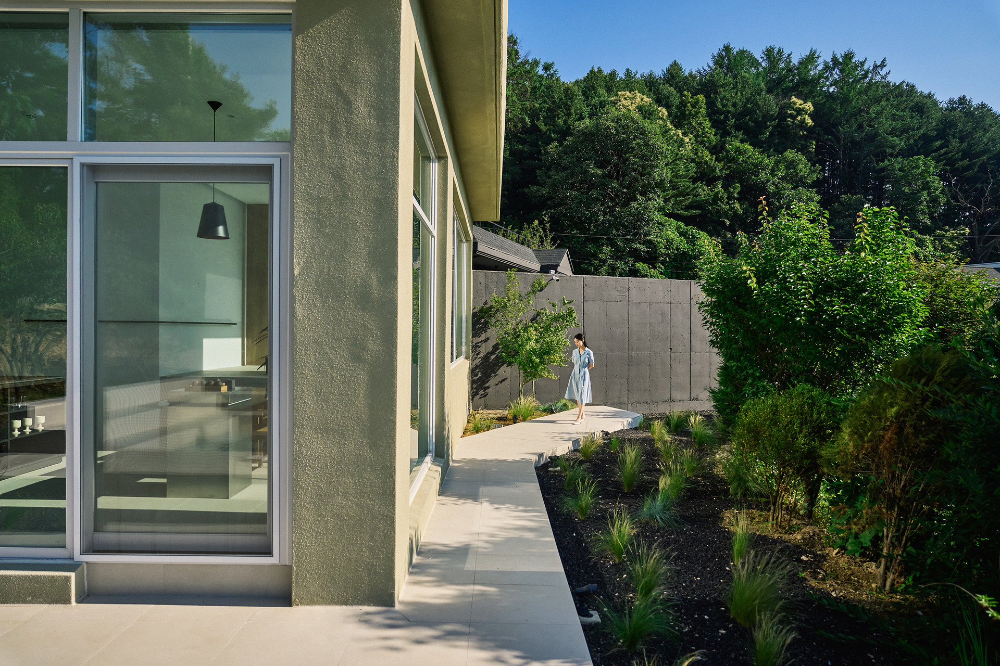
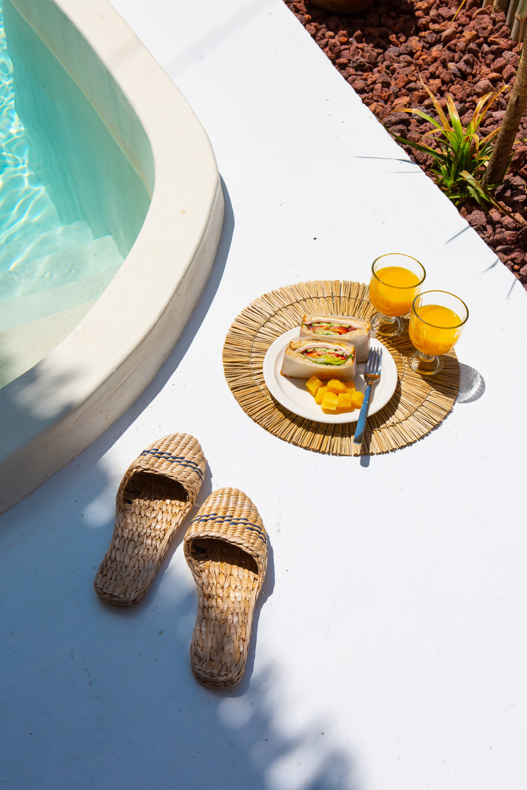

BOIS BLANC
"소음과 번잡함에서 벗어난 곳, 보아블랑에 오신 것을 환영합니다.
보아블랑은 나무의 따뜻함과 순백의 고요함이 어우러진 특별한 공간입니다.
이곳은 당신만을 위한 프라이빗한 공간이자 자연과 함께하는 특별한 쉼터입니다.
풀장에서의 여유로운 시간, 고요한 밤하늘 아래의 낭만적인 순간,
그리고 자연 속에서 재충전하는 하루를 선물합니다.
보아블랑에서 당신만의 완벽한 쉼표를 찾아보세요.
보아블랑은 자연 속에서 고급스러운 휴식을 선사하는 당신의 작은 안식처가 될 것입니다.
보아블랑은 단순한 숙소가 아니라, 당신의 마음을 치유하는 특별한 장소입니다. "